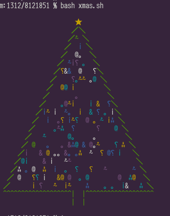

〜2013年12月下旬〜
休みに入ったので久し振りに挑戦。とはいうもののこれってtransposeなのでちょっと変更すればいけてしまう。
とりあえずBashで。とか考えてるうちにtransposeのほうが縮んだ。
これをわざわざNexus7で見たわけだけど、
いまいちなんだかわからないのでなんとかしてみる。
傾けて見るってことはその方向を縮小すればいいわけで、convertですよ。
% convert https://pbs.twimg.com/media/BcFeA0HCIAAMG1b.jpg -resize 100%x10% x: % convert https://pbs.twimg.com/media/BcFeA0HCIAAMG1b.jpg -resize 10%x100% -rotate -90 x:
結果を書くような無粋なまねはしないので実際に実行してご確認ください。
例のGUIが上げられるぜと催促してきたので上げたはいいが、途中でハングしてしまった。
psしてみると4時間ぐらい何もしてないようだったので、GUIを閉じてみたら無反応だった。
それを強制的に閉じてもaptなんちゃらがまだ残ってたのでそれもkill。
sudo do-release-upgradeすると何も言わずに終了する。
普通にaptitude safe-upgradeすると指示されたのでそれに従う。
% sudo aptitude safe-upgrade --full-resolver E: dpkg は中断されました。問題を修正するには 'sudo dpkg --configure -a' を手動で実行する必要があります。 W: キャッシュファイルにロックをかけられません。これは通常、dpkg や別の apt ツールが既にパッケージをインストール中だとい>う意味です。読み取り専用モードで開いています。パッケージの状態を変更してもそれは保存されません! E: dpkg は中断されました。問題を修正するには 'sudo dpkg --configure -a' を手動で実行する必要があります。 % sudo dpkg --configure -a <snip> update-initramfs: Generating /boot/initrd.img-3.11.0-14-generic 処理中にエラーが発生しました: antlr % sudo dpkg --configure -a dpkg: 依存関係の問題により antlr の設定ができません: antlr は以下に依存 (depends) します: libantlr-java (= 2.7.7+dfsg-5) ...しかし: パッケージ libantlr-java はまだインストールされていません。 dpkg: antlr の処理中にエラーが発生しました (--configure): 依存関係の問題 - 設定を見送ります 処理中にエラーが発生しました: antlr
antlrがどうにもならないようで。purgeしてみる。
% sudo aptitude purge antlr Processing 4 removed doc-base files... Registering documents with scrollkeeper... 処理中にエラーが発生しました: libantlr-java E: Sub-process /usr/bin/dpkg returned an error code (1) パッケージをインストールできませんでした。復旧を試みています: 現在の状態: 依存関係破損が 0 個 [-1], 更新が 681 個 [-11], 新規が 55591 個 [-16]。
やっぱだめっぽい。このlibantlr-javaを何とかしないといけない。
強制的に削除してみる。
% sudo dpkg --force-remove-reinstreq --remove libantlr-java dpkg: 警告: --force が有効なので、問題を無視します: パッケージが非常に矛盾した状態に陥りました。 削除を行う前にこのパッケージを再インストールすべきです。 (データベースを読み込んでいます ... 現在 398562 個のファイルとディレクトリがインストールされています。) libantlr-java を削除しています ... % sudo aptitude safe-upgrade --full-resolver
これでやっと通った。
antlrはたぶん必要ないよな。
groovyが巻き添えを食ったがまあ必要になったら入れよう。
uim-skk使いなので日本語入力周りは何も変わらない。
ああ、そういえば言われてたrubyのtest-allがエラーになるようなったな。
先日の画像をconvertで解けるなら作ることもできるわけでやってみた。
400x400へresizeしてcompositeするだけ。
% convert -font ipagp-mona.ttf -pointsize 30 \ \( label:"2013年クリスマスおめでとうございます" -crop 0x70%+0+5% +repage -resize 400x400\! \) \ \( label:"2014年あけましておめでとうございます" -crop 0x70%+0+5% +repage -resize 400x400\! -rotate 90 \) \ -compose Multiply -composite -type grayscale -depth 3 foo.png
文言が見えちゃってるのであれだけど、結果はこんな感じ。
ところどころ読めちゃうねえ。
Perl版をBashに移植した。
#!/bin/bash
STAR=$' \u2605'
FSLASH=$'\uFF0F'
BSLASH=$'\uFF3C'
ORNAMENTS=(0069 0020 0020 0020 0020 0020
0020 0020 0020 0020 0020 0020
0020 2E1B 2042 2E2E 0026 0040 FF61)
ORNAMENT_COLORS=(21 33 34 35 36 37)
HAT='^'
tree() {
h=$1
printf "\n%${h}s\e[33m${STAR}\n"
m=$((h * 2 - 1))
eval set {1..$h}
for l; do
o=$((l * 2 - 2))
s=$(((m - o) / 2 + 1))
printf "%${s}s\e[32m${FSLASH}"
for ((j=0; j < o; j++)); do
or=${ORNAMENTS[${#ORNAMENTS[@]}*$RANDOM/32767]}
oc=${ORNAMENT_COLORS[${#ORNAMENT_COLORS[@]}*$RANDOM/32767]}
printf "\e[${oc}m\u$or"
done
printf "\e[32m${BSLASH}\n"
done
h1=$((h - 1))
spaces=$(printf "%*s" $h1)
hats="\e[32m${spaces// /$HAT}"
printf " ${hats}| |${hats}"
if (($h > 10)); then
printf "\n $spaces| |$spaces"
fi
printf "\n\n"
}
tree 20
https://gist.github.com/eban/8121851
RANDOMのあたりは最初shuf -n1 -e的な処理だったが、
数が多くて遅すぎるのでRANDOMを使うようにした。

setup-x86(_64)はコマンドラインからも使えるようになっていて、
いろいろオプションを指定すれば何も入力することなく更新可能になる。
% ./setup-x86 -h
Starting cygwin install, version 2.831
User has backup/restore rights
Command Line Options:
-D --download Download from internet
-L --local-install Install from local directory
-s --site Download site
-O --only-site Ignore all sites except for -s
-R --root Root installation directory
-x --remove-packages Specify packages to uninstall
-c --remove-categories Specify categories to uninstall
-P --packages Specify packages to install
-C --categories Specify entire categories to install
-p --proxy HTTP/FTP proxy (host:port)
-a --arch architecture to install (x86_64 or x86)
-q --quiet-mode Unattended setup mode
-M --package-manager Semi-attended chooser-only mode
-B --no-admin Do not check for and enforce running as
Administrator
-h --help print help
-l --local-package-dir Local package directory
-r --no-replaceonreboot Disable replacing in-use files on next
reboot.
-X --no-verify Don't verify setup.ini signatures
-n --no-shortcuts Disable creation of desktop and start menu
shortcuts
-N --no-startmenu Disable creation of start menu shortcut
-d --no-desktop Disable creation of desktop shortcut
-K --pubkey URL of extra public key file (gpg format)
-S --sexpr-pubkey Extra public key in s-expr format
-u --untrusted-keys Use untrusted keys from last-extrakeys
-U --keep-untrusted-keys Use untrusted keys and retain all
-g --upgrade-also also upgrade installed packages
-o --delete-orphans remove orphaned packages
-A --disable-buggy-antivirus Disable known or suspected buggy anti virus
software packages during execution.
Ending cygwin install
たとえば
% ./setup-x86 -q -n -N -d -R c:/cygwin -s ftp://ftp.iij.ad.jp/pub/cygwin -l c:/cygwin/download
とすれば全パッケージの更新ができるし、cpioをインストールしたければ-Pで指定すればいい。
途中経過は例のGUIが出るが自動で進む。
% ./setup-x86 -q -n -N -d -R c:/cygwin -s ftp://ftp.iij.ad.jp/pub/cygwin -l c:/cygwin/download -P cpio Starting cygwin install, version 2.831 User has backup/restore rights Current Directory: c:/cygwin/download Could not open service McShield for query, start and stop. McAfee may not be installed, or we don't have access. root: c:/cygwin binary system Selected local directory: c:/cygwin/download net: Direct Loaded cached mirror list get_url_to_membuf http://cygwin.com/mirrors.lst getUrlToStream http://cygwin.com/mirrors.lst site: ftp://ftp.iij.ad.jp/pub/cygwin
get_url_to_membuf ftp://ftp.iij.ad.jp/pub/cygwin/x86/setup.bz2 getUrlToStream ftp://ftp.iij.ad.jp/pub/cygwin/x86/setup.bz2 ftp > 220 IIJ FTP server ready (IPv4 client). ftp > 230 Login successful. ftp > 200 Switching to Binary mode. ftp > 227 Entering Passive Mode (202,232,140,144,57,107). ftp > 150 Opening BINARY mode data connection for /pub/cygwin/x86/setup.bz2 (395212 bytes). ftp > 226 Transfer complete. get_url_to_membuf ftp://ftp.iij.ad.jp/pub/cygwin/x86/setup.bz2.sig getUrlToStream ftp://ftp.iij.ad.jp/pub/cygwin/x86/setup.bz2.sig ftp > 227 Entering Passive Mode (202,232,140,144,248,25). ftp > 150 Opening BINARY mode data connection for /pub/cygwin/x86/setup.bz2.sig (72 bytes). ftp > 226 Transfer complete. Added manual package cpio Changing gid back to original Visited: 280 nodes out of 3066 while creating dependency order. Dependency order of packages: base-cygwin <snip> Changing gid to Administrators Ending cygwin install % rehash % type cpio cpio is /usr/bin/cpio
複数のパッケージをインストールしたいときはcpio,bcのようにカンマで区切ればok。
たしか
POSIXにあると以前見た記憶があったが、やはりあった。順番も決まっていた。
RSをいじるのは
以前にも使っていた。
順番とは何かというと引数の間にも代入は入れることができて、たとえば
% awk '{print flag, $0}' flag=1 <(date) flag=2 <(sleep 1;date)
1 Sat Dec 28 02:24:43 JST 2013
2 Sat Dec 28 02:24:44 JST 2013
こんなことも可能。flagの値を途中で変えられる。
かと言って、まあ、あまりこれを積極的に使うケースは思いつかないけど。
馬場のShakey'sでピザとパスタの毎年恒例の忘年会。大体10周年記念らしい。
@koichiroさんが体調悪く残念ながら不参加。
ハーフってこんなでかかったっけ？
ruby -run -e httpdの話。epub追加しちゃうか。
marshalの仕様とか。amarshal。yaml。ActiveRecordがどーのこーの。
30分15000円。コンサルは占い。時間で金取れ。
きちんと働かせるにはどうしたらいいか。
公開内緒話やや多め。SAMLってなんやねん。
irbとopensslだけ使ってる人。
bz2もやめてxzでいいんじゃね。
という話ならtkを。
gem化はどうなってるのか。
cdnとかherokuとか。
Rubyのほうから来ました。消火器じゃないんだから。
rvmのトラフィックがばかにならない。
バイナリをruby-lang.orgに置いてくれとの要望もあるらしい。
cdnに乗るまでは大元が必要。
ストレージをどこかに移したい。
金。
グラント？
電話は家に置きっぱなし。
着信履歴から適当に電話しないように。
家を建てた。屋上があるらしい。川の向こうはあっち。そろってあっち。
口は災いの元。
猫しか撮らない。4匹に増えた。
iPadって写真撮れるんだ。
pserverだったわけよ。
svnを知らない子供たちさー。
git?
revision番号とか、単調増加するhash値を探すやつとか。
それすげー時間かかりそう。
そもそもcvsのときはrevision番号なんてなかった。
説得してほしい。人任せ。
方向性だけでテストもせずにコミットしない。だれもわかってくれないから。
転職。
英語大事。
品川駅は何かあるとすぐ人が溢れるのはなぜか。
最後はチョコピザでしょ、マシュマロ。
バイキングは飲み放題つきだと1時間半で1人3000円ぐらいだけど、
バンキングではなくぐだぐだと4時間半いて1人3000円に収まっている。
今度は鍋でも。
思い出したら追記。
@eban,@gotoyuzo,@hemge,@hsbt,@nahi
外側の32Wがついにつかなくなったのでamazonで適当に安いのを発注。
発注する際に物の名前がわからなくてちょっと難儀した。
最初は「蛍光灯 丸型」で検索したら蛍光灯そのものがずーっと続いたが、
何ページも送っていると写真入りで「洋風ペンダント」とか出てきた。
つまり「蛍光灯ペンダント」が正解のようで。
一昨日頼んだら昨日の夜にはもう着いていた。
この立て込んでる時期にしてはやけに速いな。
最近のは1回引っぱっても外側が消えるわけじゃなくて、
全体的にちょっと暗くなるようで。70%と説明書には書いてあった。
省エネモードか。はっきり言ってあまり変わらないので常に省エネモードでいい感じだ。
豆球は使わないので、常に2回引っぱればいいわけだな。
例のアメダスのRSSの件だけど、2回同じものが出てくることがあって不思議だったが、
こんなケースがあった。
まずアメダスの情報は毎時10分すぎぐらいに更新される。
Yahoo! Pipesの巡回がたまたまその10分よりも前の5分とかに来ると、
時間がずれるというのは気づいてたのでこれは対処できた。
しかし夜中の0時だけは日付が変わってしまうので対処できない。
それもこれもアメダスの情報がなぜか0時から23時じゃなくて、
1時から24時になっているからだ。
24時ってことは翌日なわけでここだけNOWで時刻を拾ってしまうとずれてしまう。
そこで、JSTじゃなくてGMT+0800にしたわけだけど、
どういうわけか最近夜中の0時台に来ないで1時台にずれこむことが多い。
まあ、そうなると結局日付がそこで変わるので同じことになってしまう。
根本的には日付をNOWじゃなくてHTMLから拾う必要があるが、
まあ、そこはrowspanの扱いが難しすぎてXPathでなんとかできるのかどうか。
いろいろ集めてみた。
% echo おもてなし | sed 's/\B/・/g'
お・も・て・な・し
% echo おもてなし | gawk 'gsub(/\B/, "・")'
お・も・て・な・し
% echo おもてなし | ruby -ple 'gsub(/\B/, "・")'
お・も・て・な・し
% echo おもてなし | perl -CIO -Mutf8 -ple 's/\B/・/g'
お・も・て・な・し
% echo おもてなし | bash -c 'set $(grep -o .);IFS="・";echo "$*"'
お・も・て・な・し
% echo おもてなし | zsh -c 'read a;echo ${(j:・:)${(s::)a}}'
お・も・て・な・し
これって普通に
% echo おもてなし | grep -o . | paste -sd"・"
でいいんじゃないかという気がするが、
pasteの-dはマルチバイト対応してないので、
泣き別れになってしまう。